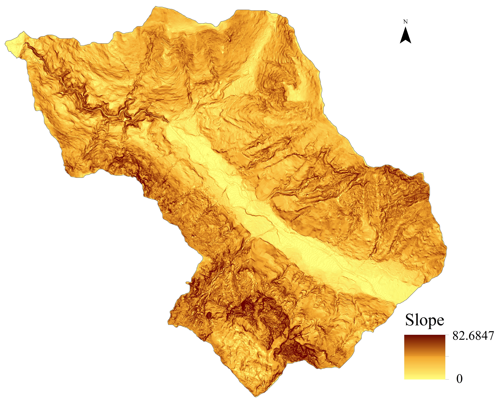
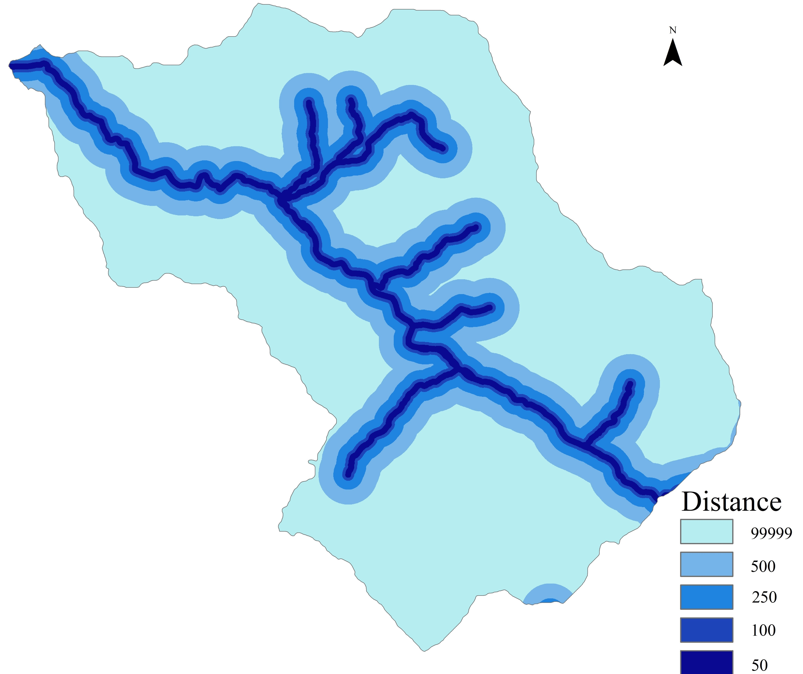
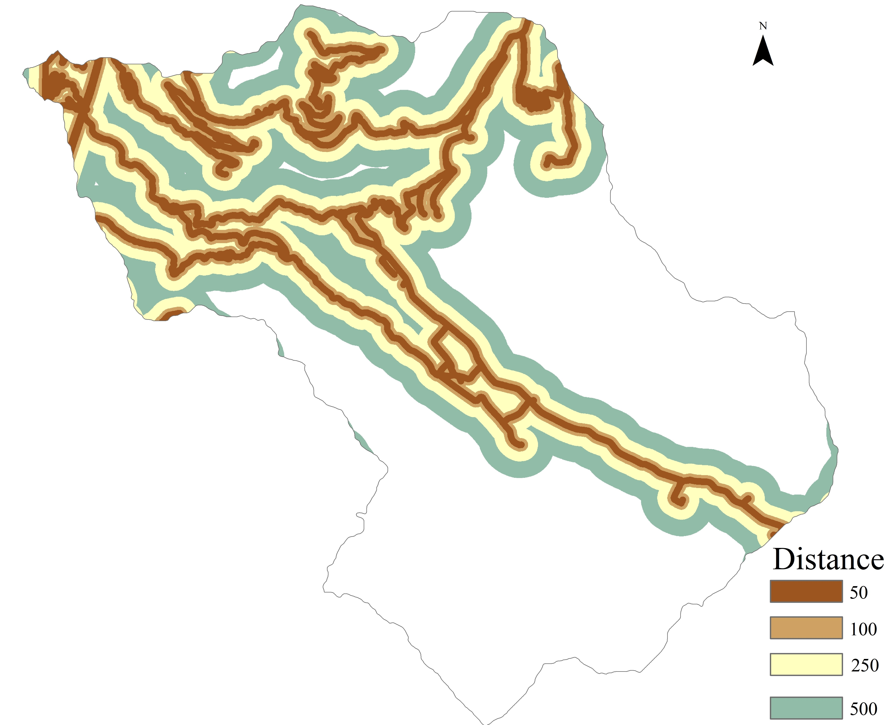
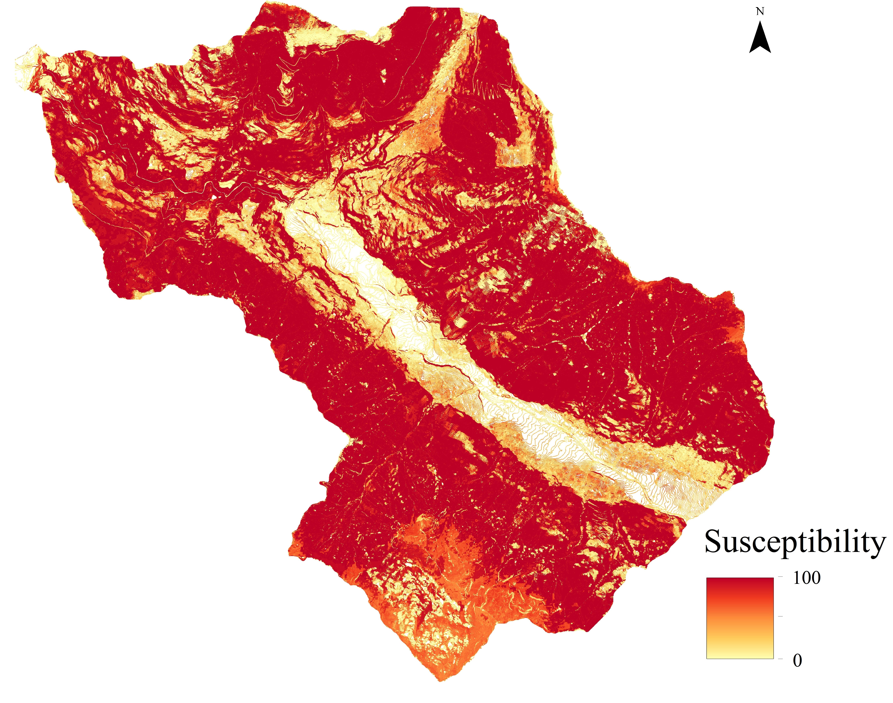

Project Results
Key findings from our nationwide air quality analysis across Greece
National Air Quality Patterns

Our analysis of air quality across Greece revealed several important national patterns:
- Urban Concentrations: Major urban centers like Athens and Thessaloniki consistently showed the highest levels of air pollution, particularly for NO2 and PM10, reflecting the impact of vehicle emissions and industrial activities.
- Coastal-Inland Gradient: Coastal areas generally showed better air quality than inland regions, benefiting from sea breezes that help disperse pollutants, with the exception of major port cities.
- Seasonal Variations: Winter months showed elevated levels of PM2.5 across northern Greece due to residential heating with wood and fossil fuels, while summer months saw increased ozone levels, especially in southern regions with high solar radiation.
- Topographic Influence: Mountain ranges created distinct air quality regions, with valleys and basins occasionally experiencing pollution trapping during temperature inversions.
Seasonal Tourism Impact


The seasonal influx of tourists significantly affected air quality patterns:
- Island Hotspots: Popular tourist islands showed dramatic increases in NOx and PM levels during peak summer months, with some locations experiencing up to 300% increases in air pollutants compared to winter baselines.
- Cruise Ship Impact: Major port cities serving cruise ships showed distinctive pollution signatures, with elevated SO2 levels during peak arrival and departure times.
- Correlation with Visitor Numbers: Statistical analysis revealed strong correlations (r=0.78) between monthly tourist numbers and air pollution levels in key destination areas.
- Transport Corridors: Major tourist transport routes showed linear patterns of elevated pollution following the road network to popular destinations.
Urban vs. Rural Analysis

Comparing urban and rural areas across Greece revealed significant disparities:
- Urban Concentrations: Urban areas showed PM2.5 concentrations averaging 2.7 times higher than rural areas, with greater disparities during weekdays and rush hours.
- Rural Seasonal Patterns: Rural areas showed distinctive seasonal patterns related to agricultural activities, with elevated particulate matter during harvest periods and land preparation.
- Industrial Zones: Rural areas near industrial facilities showed pollution patterns resembling urban areas but with different chemical signatures specific to industrial emissions.
- Wildfire Impact: Rural areas affected by seasonal wildfires experienced acute short-term pollution events that temporarily exceeded even the most polluted urban centers.
Health Risk Assessment

Our health risk assessment identified areas of concern for population exposure:
- Urban Vulnerability: Dense urban areas with high proportions of elderly and young children showed the highest health risk indices, particularly in older neighborhoods with limited green space.
- Seasonal Health Burden: Tourist areas experienced seasonal shifts in health burden as population numbers fluctuated, with systems potentially strained during peak season.
- Industrial Proximity: Residential areas within 5km of major industrial facilities showed elevated health risks even in otherwise rural settings.
- Topographic Traps: Valley communities with poor air circulation showed persistent exposure patterns that increased cumulative health risks despite moderate pollution levels.
Policy Recommendations
Based on our analysis, we propose several policy recommendations:
- Targeted Urban Interventions: Implement low emission zones in city centers with the highest pollution levels and population exposure.
- Seasonal Tourism Management: Develop seasonal air quality management plans for tourist areas that scale monitoring and mitigation measures with visitor numbers.
- Port Emission Controls: Strengthen emission regulations for shipping in major ports, especially those serving cruise ships during peak season.
- Winter Heating Alternatives: Promote cleaner heating alternatives in northern regions with high wood-burning prevalence.
- Enhanced Monitoring Network: Expand the air quality monitoring network to better cover island and rural areas currently underrepresented.
- Integrated Planning: Incorporate air quality considerations into urban planning, transportation, and tourism development strategies.
Interactive WebGIS Exploration
For a deeper exploration of these results, we have developed an interactive WebGIS platform that allows users to:
- Visualize air quality patterns across different pollutants and time periods
- Explore the relationship between air pollution and various geographic factors
- Examine population exposure and health risk assessments
- Compare seasonal variations and tourist impact patterns
- Access detailed information about specific locations and regions